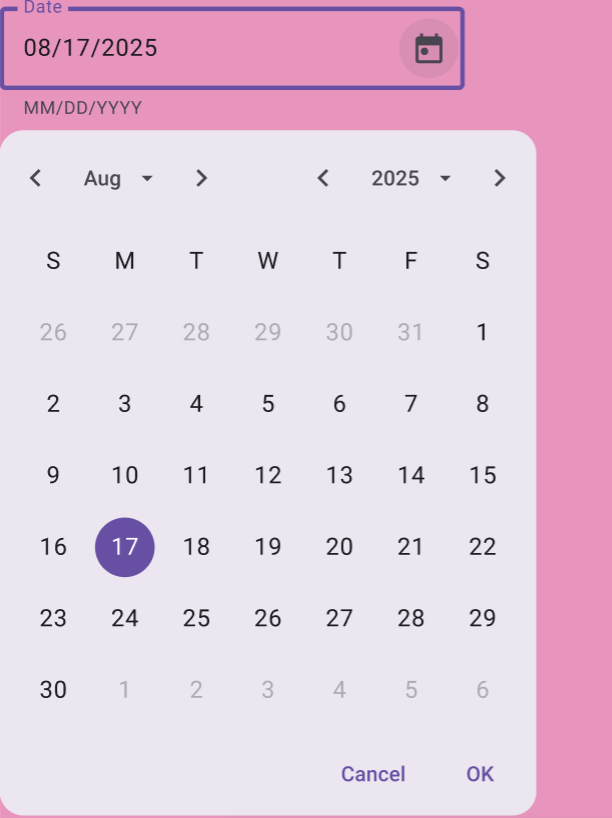
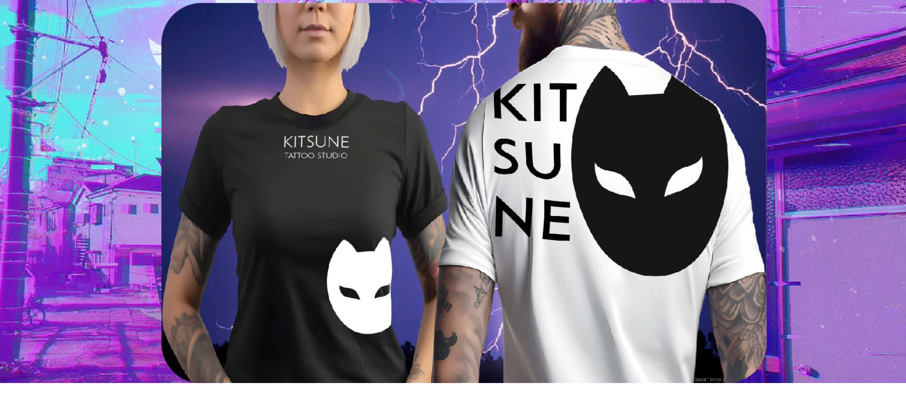

Arte, tradición y estilo en el corazón de Shibuya. Creamos diseños únicos que cuentan tu historia en tu piel.
Tatuate con nosotros
En Kitsune Tattoo Studio ofrecemos un ambiente seguro, higiénico y profesional. Nuestro equipo de artistas está listo para acompañarte en tu primer tatuaje o en sumar una nueva obra a tu colección.

Muestrario de tatuajes y artistas
Conocé a nuestros tatuadores y su estilo:
Brando Chiesa
Especialista en tatuajes full color, New School, Neo-tradicional, Anime fusionado con una impronta gore con kawaii.
Laura Anunnaki
Tatuajes estilo kawaii, con un toque brillante y colorido, inspirados en la cultura pop japonesa y el anime. Sus diseños...
Merch oficial
Descubrí nuestra línea de ropa y accesorios inspirados en la cultura japonesa y el arte del tatuaje.

Quiénes somos
Kitsune Tattoo Studio nació en el corazón de Shibuya con la idea de fusionar arte, tradición y modernidad en cada trazo.
Nuestro enfoque se inspira en la estética japonesa, los mitos del zorro Kitsune y la cultura urbana contemporánea.
Creemos que cada tatuaje es una historia personal, por eso diseñamos piezas únicas adaptadas a cada cliente.
Somos un equipo de artistas apasionados que valoran la calidad, la higiene y la conexión con quienes nos eligen.